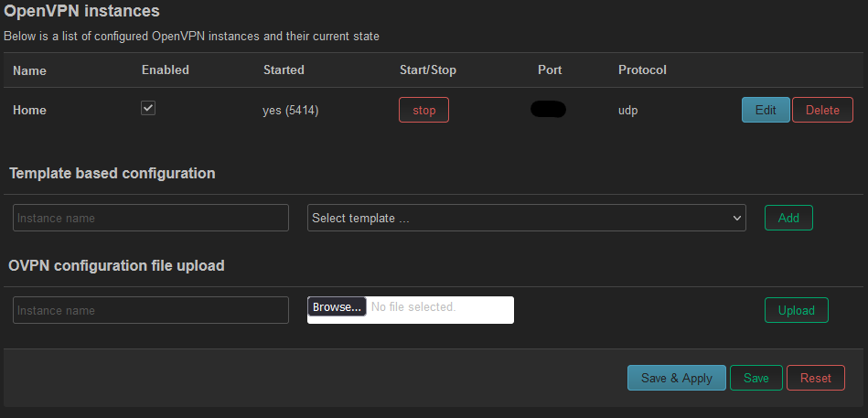
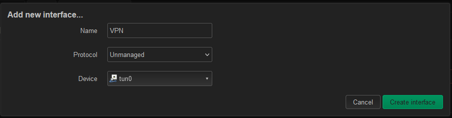
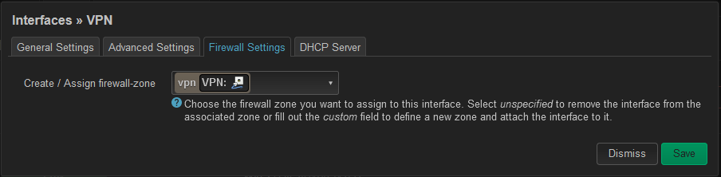
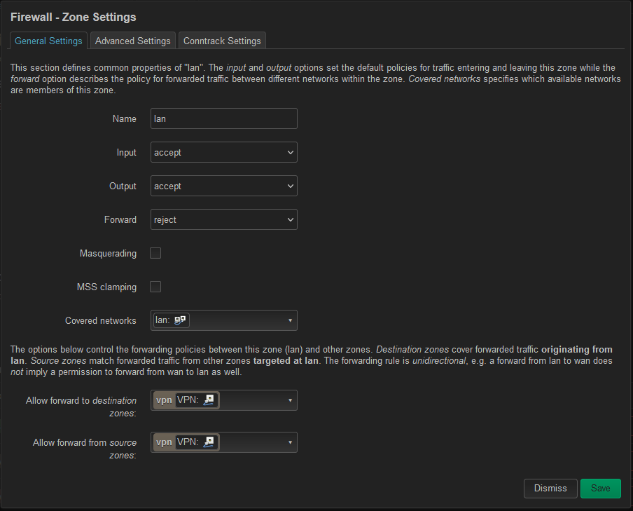
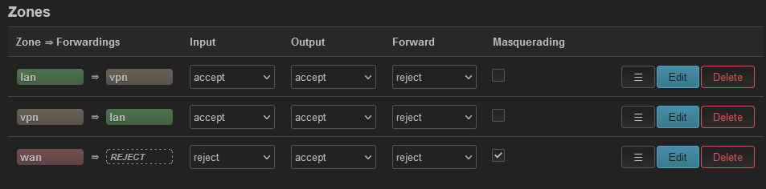

Connecting OpenWRT to my Device-based VPN
If you’ve seen my previous post on this, I set up a VPN for connecting devices and their remote networks back to my home network. Now, we’re going to deal with the remote devices in question.
Please note, THIS DOES NOT TAKE FIREWALL RULES INTO ACCOUNT. I’m not going over firewall settings because the way I want to use my network might be different from how you want to use yours. It’s up to you to determine how you want to use your firewall, and how much security you want (if any). The way I set this up, ANY DEVICE this OpenWRT device serves will connect BY DEFAULT back through your OpenVPN network.
OpenWRT Configuration
Setting up the original OpenWRT device is up to you, I’m going to be using a ClearFog Pro for this example, since it has wired, WiFi, and a Cellular Modem.
First, get OpenWRT set up and working at a minimum. Mostly we need this because we need packages.
opkg update
opkg install luci-app-openvpn openvpn-opensslOpenVPN Client
The OpenVPN operation is pretty simple. Once the packages are installed, a new tab for VPN will appear at the top, with OpenVPN as a category within. Delete all the sample server configs, then under “OVPN configuration file upload” upload your config file, then enable it, and click ‘Save & Apply” at the bottom.

What the final result should look like
Next, we need to add an interface to the OpenWRT device to allow us to use this VPN connection with the firewall. Under Network > Interfaces, click “Add new interface…”. Set the protocol to Unmanaged (OpenVPN will handle the addressing) and the device to tun0 (or your tun device if you changed it).

The final result
Next, edit that interface that was just created, and go to Firewall Settings. In the drop down menu, there will be a text box to create a new zone. The VPN interface should end up in this zone, not WAN or LAN or unspecified.

Under Network > Firewall, click Edit on the “lan => wan” entry and change the values so that the “allowed forward to destination zones” and “allowed forward from source zones” fields are both your new VPN firewall zone.

LAN Zone Settings

The final result
With this done (and Saved and Applied!) you should now be able to get from your OpenVPN server to your OpenVPN client (this device).